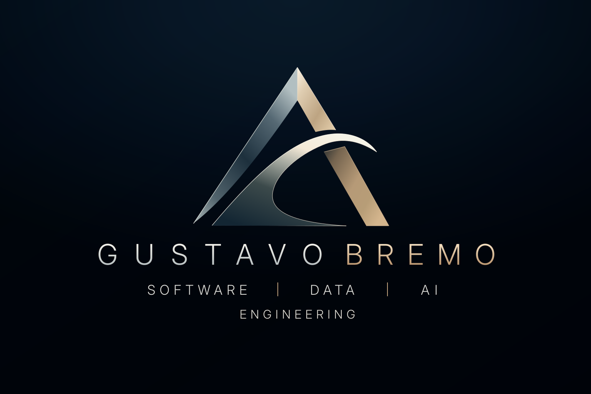

Software
Engineering
Backend systems, Python applications, APIs, integrations, architecture and technical system design.
Discuss this capabilityIndependent consultant · Germany
Software, data and AI engineering for teams working with complex products, scientific data and cloud platforms.

SOFTWARE · DATA · AI01 — About
I help teams turn demanding technical problems into dependable systems. My work connects software engineering, data platforms, AI/ML and cloud infrastructure with a background in life sciences and bioinformatics.
MSc Bioinformatics
Life sciences & scientific computing
Production-oriented systems
Data-intensive environments
02 — Services
Capabilities for complex engineering work
Backend systems, Python applications, APIs, integrations, architecture and technical system design.
Discuss this capabilityData pipelines, processing systems, platforms and integrations for scientific and data-intensive work.
Discuss this capabilityAI application integration, ML infrastructure, LLM applications and AI platform development.
Discuss this capabilityAWS, containers, Kubernetes, CI/CD, cloud infrastructure and platform engineering capabilities.
Discuss this capability03 — Expertise
A focused set of engineering capabilities, applied with attention to the system around the code.
04 — Industries
Scientific and technical environments need more than working software. They need systems that respect the data, the domain and the people who depend on them.
05 — Engagements
Independent consulting can support a focused initiative or a larger engineering transition.
Contact
Share a little about what you are building, changing or figuring out.
contact@gustavobremo.com